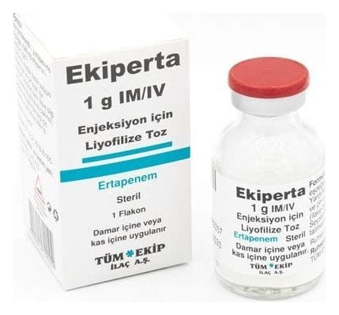

Ekiperta 1 g İM/İV Enjeksiyon İçin Liyofilize Toz

Ne için kullanılır
KT · Bölüm 1EKİPERTA, beta-laktam grubu bir antibiyotik olan ertapenem etkin maddesini içerir. EKİPERTA vücudun çeşitli bölgelerinde enfeksiyonlara yol açan bakterilerin (mikroplar) geniş bir yelpazesini öldürme becerisine sahiptir.
EKİPERTA 3 aylık ve daha büyük kişilere verilebilir.
Tedavi: Sizde veya çocuğunuzda aşağıdaki enfeksiyon türlerinden biri (veya daha fazlası) bulunduğu için doktorunuz EKİPERTA’yı size reçete etmiştir: • Karın içi enfeksiyonlar, • Akciğerleri etkileyen enfeksiyonlar (zatürre), • Jinekolojik enfeksiyonlar (kadın üreme sistemi ile ilgili), • Şeker hastalığı olanlarda ayakta oluşan cilt enfeksiyonları dahil deri ve deri ile ilgili yapıların enfeksiyonları
Önleme: • Kalın bağırsak veya rektum ameliyatları sonrası ortaya çıkan ameliyat bölgesi enfeksiyonlarının önlenmesinde